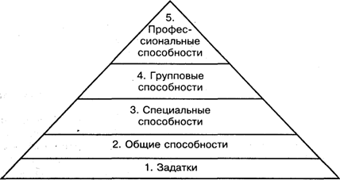

Тема лекции № 15. Способности
План:
1. Понятие о способностях
2. Способности, задатки и индивидуальные различия людей
3. Развитие способностей
Понятие о способностях
Проблема способностей всегда волновала умы и с теоретической, и с практической стороны. Встречая проявления ярких способностей, мы удивляемся и восхищаемся ими.
Когда мы пытаемся понять и объяснить, почему разные люди, обстоятельствами жизни поставленные в одинаковые или примерно одинаковые условия, достигают разных успехов, мы обращаемся к понятию способности, полагая, что разницу в успехах можно вполне удовлетворительно объяснить ими. Это же понятие используется нами тогда, когда нужно осознать, в силу чего одни люди быстрее и лучше, чем другие, усваивают знания, умения и навыки. Что же такое способности?
Термин «способности», несмотря на его давнее и широкое применение в психологии, неоднозначен.
Способности — это то, что не сводится к знаниям, умениям и навыкам, но объясняет (обеспечивает) их быстрое приобретение, закрепление и эффективное использование на практике.
Значительный вклад в разработку общей теории способностей внес наш отечественный ученый Б.М.Теплов. В понятии «способности», по его мысли, заключены три идеи. «Во-первых, под способностями разумеются индивидуально-психологические особенности, отличающие одного человека от другого... Во-вторых, способностями называют не всякие вообще индивидуальные особенности, а лишь такие, которые имеют отношение к успешности выполнения какой-либо деятельности или многих деятельностей... В-третьих, понятие "способность" не сводится к тем знаниям, навыкам или умениям, которые уже выработаны у данного человека».
Способности, считал Б.М.Теплов, не могут существовать иначе, как в постоянном процессе развития. Способность, которая не развивается, которой на практике человек перестает пользоваться, со временем теряется. Только благодаря постоянным упражнениям, связанным с систематическими занятиями такими сложными видами человеческой деятельности, как музыка, техническое и художественное творчество, математика, спорт и т.п., мы поддерживаем у себя и развиваем дальше соответствующие способности.
Успешность выполнения любой деятельности зависит не от какой-либо одной, а от сочетания различных способностей, причем это сочетание, дающее один и тот же результат, может быть обеспечено различными способами. При отсутствии необходимых задатков к развитию одних способностей их дефицит может быть восполнен за счет более сильного развития других.
Рассмотрим вопрос о классификации способностей человека. Их довольно много. В первую очередь необходимо различать природные, или естественные, способности (биологически обусловленные) и специфические человеческие способности, имеющие общественно-историческое происхождение.
Многие из природных способностей являются общими у человека и у животных, особенно высших, например — у обезьян. Такими элементарными способностями являются восприятие, память, мышление, способность к элементарным коммуникациям на уровне экспрессии. Эти способности непосредственно связаны с врожденными задатками, но не тождественны им, а формируются на их основе при наличии элементарного жизненного опыта.
У человека, кроме биологически обусловленных, есть способности, обеспечивающие его жизнь и развитие в социальной среде. Это общие и специальные высшие интеллектуальные способности, основанные на пользовании речью и логикой, теоретические и практические, учебные и творческие, предметные и межличностные.
Общие способности включают те, которыми определяются успехи человека в самых различных видах деятельности. Например, умственные способности, тонкость и точность ручных движений, развитая память, совершенная речь и ряд других.
Специальные способности определяют успехи человека в специфических видах деятельности, для осуществления которых необходимы задатки особого рода и их развитие. К таким способностям можно отнести музыкальные, математические, лингвистические, технические, литературные, художественно-творческие, спортивные и ряд других. Наличие у человека общих способностей не исключает развития специальных и наоборот. Нередко общие и специальные способности сосуществуют, взаимно дополняя и обогащая друг друга.
Теоретические и практические способности отличаются тем, что первые предопределяют склонность человека к абстрактно-теоретическим размышлениям, а вторые - к конкретным, практическим действиям. Такие способности в отличие от общих и специальных, напротив, чаще не сочетаются друг с другом, вместе встречаясь только у одаренных, разносторонне талантливых людей.
Учебные и творческие способности отличаются друг от друга тем, что первые определяют успешность обучения и воспитания, усвоения человеком знаний, умений, Навыков, формирования качеств личности, в то время как вторые — создание предметов материальной и духовной культуры, производство новых идей, открытий и изобретений, словом — индивидуальное творчество в различных областях человеческой деятельности.
Способности к общению, взаимодействию с людьми, а также предметно-деятельностные, или предметно-познавательные, способности - в наибольшей степени социально обусловлены. В качестве примеров способностей первого вида можно привести речь человека как средство общения (речь в ее коммуникативной функции), способности межличностного восприятия и оценивания людей, способности социально-психологической адаптации к различным ситуациям, способности входить в контакт с различными людьми, располагать их к себе, оказывать на них влияние и т.п.
Способности предметно-познавательного плана известны как способности к различным видам теоретической, и практической деятельности.
Не отдельные способности непосредственно определяют успешность выполнения какой-либо деятельности, а лишь их удачное сочетание, именно такое, какое для данной деятельности необходимо. Практически нет такой деятельности, успех в которой определялся бы лишь одной способностью.
Способности не только совместно определяют успешность деятельности, но и взаимодействуют друг с другом, оказывая влияние друг на друга. Сочетание различных высокоразвитых способностей называют одаренностью, и эта характеристика относится к человеку, способному ко многим различным видам деятельности.
Способности, задатки и индивидуальные различия людей
В науке четко разделяют понятия «задатки» и «способности».
Задатки— это врожденные анатомо-физиологические особенности мозга, нервной системы, органов чувств и движения, функциональные особенности организма человека, составляющие природную основу развития его способностей. Люди от природы наделены различными задатками, они лежат в основе развития способностей. Не развитые вовремя задатки исчезают. Многим известны случаи, когда дети, попав в логово зверей и не получив, таким образом, возможности развивать свои задатки, теряли их навсегда.
Способности — это формирующиеся в деятельности на основе задатков индивидуально-психологические особенности, отличающие одного человека от другого, от которых зависит успешность деятельности.
На рис.1 наглядно представлена динамика и трансформация способностей.

Рисунок 1 - "Конус способностей"
Основы способностей заложены генетически, они зависят от задатков. Так, люди могут овладеть членораздельной речью и логическим мышлением. Задатки на рисунке расположены в основании конуса. Далее представлены общие и специальные способности. Групповыми называют способности, которые группируются и развиваются на базе задатков, общих и специальных. В 16—18 лет, когда происходит выбор профессии, у личности меняется и структура способностей, проявляются профессиональные способности, которые и завершают конус. На рисунке продемонстрировано, как по мере развития способностей суживается диапазон возможностей, но зато увеличивается специализация способностей. Из рисунка также следует, что "конус способностей" формируется по направлению снизу вверх, а их разрушение идет в противоположном направлении.
Исследователями установлено, что способности – прижизненные образования, что их развитие идёт в процессе индивидуальной жизни, что среда, воспитание активно формируют их.
На протяжении длительного времени способности связывались с особенностями строения головного мозга, выраженного в строении черепа. Пример этого представлен на «френологической» карте Ф.Галля. Также проблемой измерения способностей с помощью тестов занимались исследователи Спирмен, Кеттел, Бине, Айзенк.
Выделяют следующие уровни способностей:
Репродуктивный - обеспечивает высокое умение усваивать знания, овладевать деятельностью. В Высших своих проявлениях – талант (способность личности к определённой деятельности).
Творческий - обеспечивает создание нового, оригинального. В высших проявлениях - гениальность (способность к достижениям в разных сферах деятельности).
Природа человеческих способностей
Природа человеческих способностей вызывает достаточно бурные споры среди ученых. Являются ли наши способности врожденными или они формируются прижизненно? Нужно ли родиться музыкантом, или талант, как следует из известного высказывания, — это 1% способностей и 99% пота? Среди ученых имеются активные приверженцы как одной, так и другой точки зрения.
Сторонники идеи способностей утверждают, что способности биологически обусловлены и их проявление целиком зависит от унаследованного генетического фонда. Обучение и воспитание, считают ученые, стоящие на этой позиции, может лишь ускорить процесс проявления способностей, но и без педагогического воздействия они обязательно проявятся. В качестве доказательств приводят примеры династий выдающихся людей (Бахов, Дарвинов, Шиллеров, Толстых), повторений способностей у детей талантливых музыкантов, ученых, художников.
Специальные исследования музыкальности детей, у которых оба родителя были музыкальны или оба немузыкальны, также подтверждают эту позицию. Если оба родителя были музыкальны, то ярко выраженная музыкальность наблюдалась у 85% детей и только 7% из них были совсем немузыкальны. Если оба родителя были немузыкальны, то ярко выраженную музыкальность обнаруживали только 25% детей, а совсем немузыкальными оказывались 58%.
В подтверждение генотипического фактора указывают на факты проявления способностей в детском возрасте, когда еще не было систематического обучения и воспитания. Так, например, незаурядные способности к математике Гауса проявились в 4 года, музыкальная одаренность Моцарта — в 3 года, литературные способности Пушкина — в 9 лет.
Представители другой крайней точки зрения считают, что особенности психики определяются качеством воспитания и обучения и что у каждого человека можно сформировать любые способности. Сторонники данного направления ссылаются на случаи, когда дети самых примитивных племен, получив соответствующее обучение, ничем не отличались от образованных европейцев. Здесь же говорят о так называемых "детях-маугли", которые убедительно свидетельствуют о непоправимом уроне, даже невозможности человеческого развития вне социума.
Ю.Б.Гиппенрейтер в книге "Введение в общую психологию" приводит пример из опыта московского учителя музыки М.П.Кравца. Он специально выбирал особенно неспособных в музыкальном отношении учеников и иногда доводил их до уровня учащихся центральной музыкальной школы (уровня, как известно, самого высокого). Кранца увлекал сам процесс производства "способностей". Он считал, что неспособных детей вообще не существует.
На основании приведенных примеров можно сделать вывод о том, что факторы среды обладают весом, соизмеренным с фактором наследственности, и могут иногда полностью компенсировать или, наоборот, нивелировать действие последнего.
Условиями и предпосылками развития у человека социальных способностей являются следующие обстоятельства его жизни:
1. Наличие общества, социально-культурной среды, созданной трудом многих поколений людей. Эта среда искусственна, включает множество предметов материальной и духовной культуры, обеспечивающих существование человека и удовлетворение его собственно человеческих потребностей.
2. Отсутствие природных задатков к пользованию соответствующими предметами и необходимость обучения этому с детства.
3. Необходимость участия в различных сложных и высокоорганизованных видах человеческой деятельности.
4. Наличие с рождения вокруг человека образованных и цивилизованных людей, которые уже обладают необходимыми ему способностями и в состоянии передать ему нужные знания, умения и навыки, располагая при этом соответствующими средствами обучения и воспитания.
5. Отсутствие с рождения у человека жестких, запрограммированных структур поведения типа врожденных инстинктов, незрелость соответствующих мозговых структур, обеспечивающих функционирование психики, и возможность их формирования под влиянием обучения и воспитания.
Каждое из названных обстоятельств является необходимым для превращения человека как биологического существа, с рождения располагающего некоторыми элементарными способностями, свойственными и многим высшим животным, в социальное существо, приобретающее и развивающее в себе собственно человеческие способности.
Развитие способностей
Перед психологией очень остро стоит проблема выявления механизмов формирования и развития способностей. Точные механизмы такого процесса еще неизвестны. Однако некоторые сведения могут быть привлечены к обсуждению этого вопроса.
Это прежде всего данные о сензитивных периодах формирования функций. Каждый ребенок в своем развитии проходит периоды повышенной чувствительности к тем или иным воздействиям, к освоению того или иного вида деятельности. Известно, например, что у ребенка 2—3 лет интенсивно развивается устная речь, в 5—7 лет он наиболее готов к овладению чтением; в среднем и старшем дошкольном возрасте дети увлеченно играют в ролевые игры и обнаруживают чрезвычайную способность к перевоплощению и вживанию в роль.
Важно отметить, что эти периоды особой готовности к овладению специальными видами деятельности рано или поздно заканчиваются, и если какая-то функция не получила своего развития в определенный период, то впоследствии ее развитие очень затруднено, а то и вовсе невозможно. Например, в подростковом возрасте уже очень трудно научиться прямохождению и речи.
Известно, что Ч.Чаплин впервые вышел на сцену в возрасте 5 лет. В тот день у матери-актрисы сорвался голос. Ее освистали, и она ушла за кулисы. Возник неприятный разговор с директором театра, который боялся потерять денежный сбор. Но тут директору пришла в голову мысль вывести на сцену мальчика, который находился здесь же. Раньше ему доводилось видеть, как маленький Чарли пел и танцевал, подражая матери. Сказав несколько слов публике, директор ушел, оставив мальчика одного на ярко освещенной сцене. Тот начал петь, ему стали кидать деньги. Он воодушевился, и концерт продолжался с нарастающим успехом. В этот день Чарли испытал яркое эмоциональное потрясение: он понял, что сцена - его призвание. Этот случай имел место в сензитивный период формирования артистических способностей. С тех пор он начал проявлять себя и постепенно овладевать профессиональным мастерством.
Есть примеры и другого рода, когда способности обнаруживаются не в раннем, а позднем возрасте. Так, некая пожилая женщина, оставшись одна в инвалидной коляске, неожиданно для себя начала рисовать. Из-под ее руки выходили рисунки, которыми могли похвалиться любые начинающие художники.
Японский художник Хокусай писал о том, что с шести лет им владела страсть к рисованию, изображению различные форм. К пятидесяти годам у него было сделано бесчисленное количество рисунков, однако он считал, что все сделанное им не стоит внимания. Только в семьдесят три он кое-что узнал о действительном строении природы — животных, растений, птиц, рыб и насекомых. Он пишет, что, когда ему будет восемьдесят, он узнает еще больше, в девяносто постигнет тайный смысл вещей, а в сто, безусловно, достигнет поразительных высот. Он думает, что, когда ему будет сто десять лет, все, что он нарисует, хоть линию, хоть точку, - все будет живым, будет дышать жизнью.
Данные примеры показывают, что практически не существует возрастных границ развития способностей, хотя, конечно же, их надо развивать в самом раннем детстве.
Важную роль в развитии способностей играют мотивация и вызываемая ею напряженная активность. Наблюдения за одаренными детьми показывают, что они обнаруживают сильную тягу к занятиям той деятельностью, к которой они предрасположены. Такие дети могут без устали часами изо дня в день заниматься интересующим их делом.
Способности — понятие динамическое. Они формируются, развиваются и проявляются в деятельности. Без собственной активной деятельности нельзя развить способности. Свои способности можно определить, только попытавшись приложить их. Конечно, не раскрыв рта, нельзя узнать, сможешь ли ты петь, есть ли у тебя голос. Это главный ответ на вопрос о том, как найти свое призвание. Только в трудовой деятельности можно найти ту основную среду, которая сформирует ваш талант.
Основная литература:
1. Лейтес Н.С. Способности и одаренность в детские годы. — М., 1984.
2. Рубинштейн СЛ. Основы общей психологии: В 2 т. — Т. II. — М., 1989.
3. Теплов Б.М. Избранные труды: В 2 т. — Т. I. — М., 1985.
4. Гиппенрейтер Ю.Б. Введение в общую психологию. Курс лекций. — М., 1988.
5. Мерлин В.С. Структура личности. Характер, способности, самосознание: Учебное пособие к спецкурсу. — Пермь, 1990.